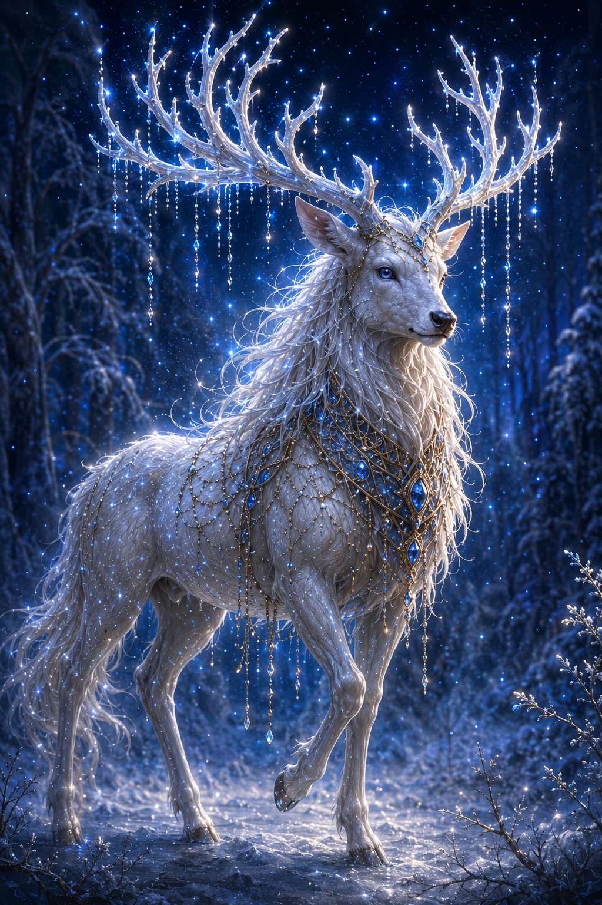
Agorinex
A beautiful silver-white stag.

The Argenserpens
The three-headed guardian of Argenta, the Silver Lands. It rises from sand, asks riddles, demands answers and grants passage only to those who think clearly.
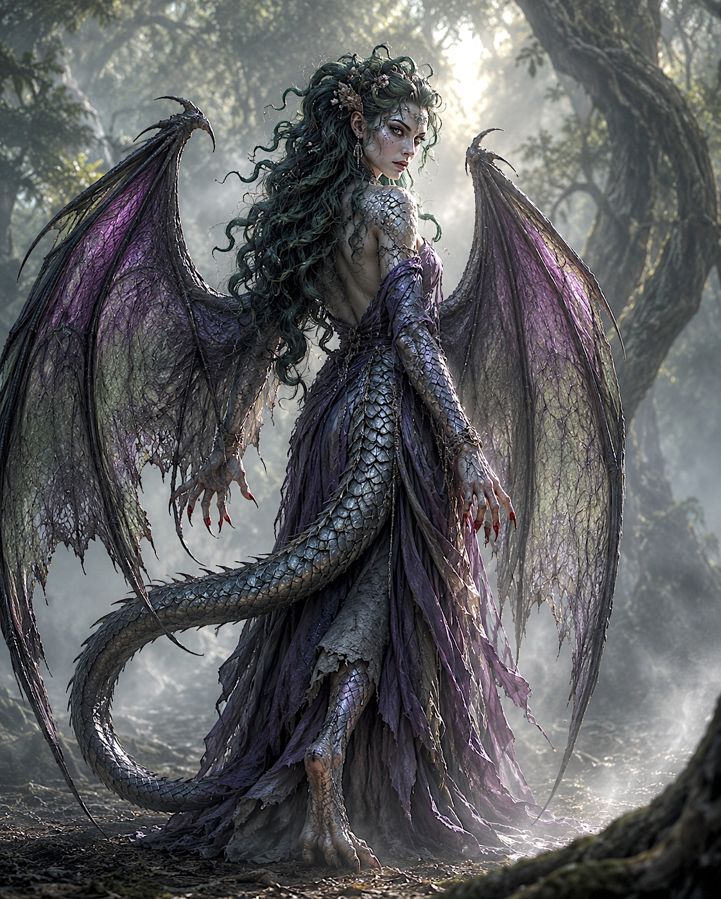
The Caudisguiba
Part woman, part creature, winged and scaled, feared as a forest witch of Limskada. She longs to be seen as beautiful and wants Gracie as a friend.

Frostmaw
Apex Predator of Skjarthfell. Among the deadliest predators of the North, Frostmaws travel unseen beneath ice and stone before erupting without warning. Their freezing breath and devastating ambush attacks have claimed countless travellers attempting the journey to Skjarthfell.
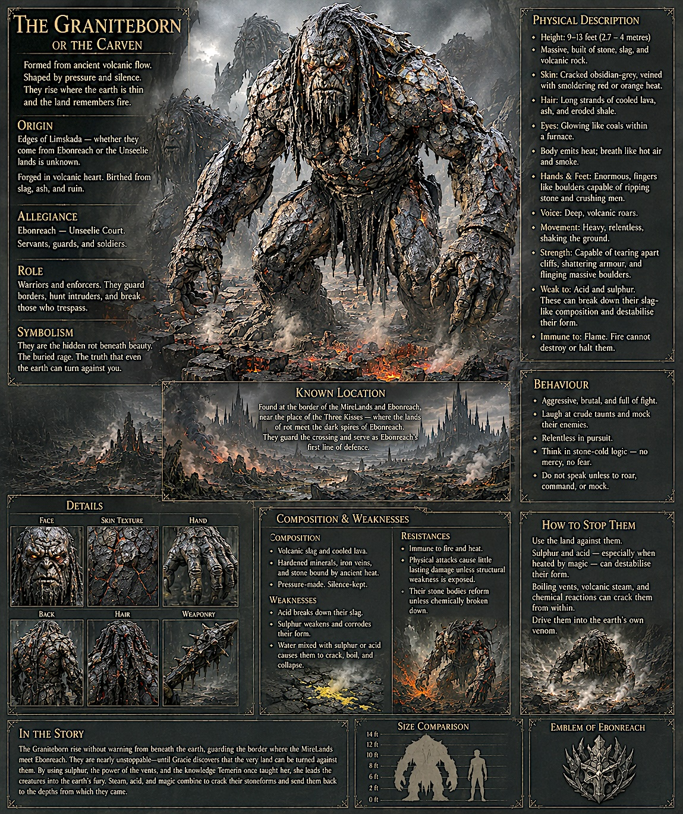
The Graniteborn / The Carven
Stone soldiers of Ebonreach, shaped from rock, slag and volcanic flow. Formed by pressure and silence, they cannot be stopped by flame, but acid and sulphur weaken them.
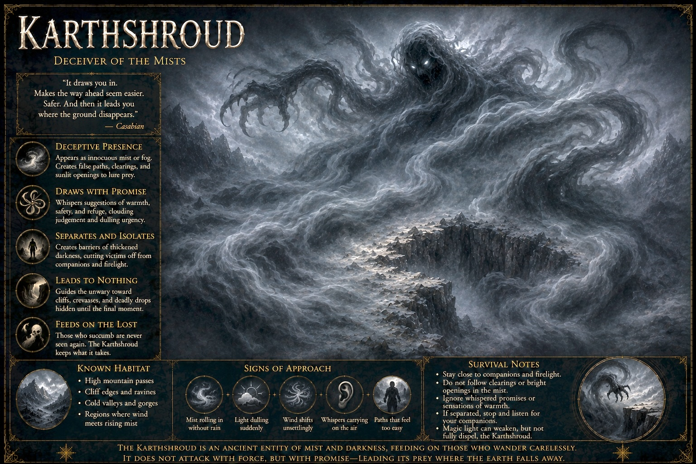
Karthshroud
Deceiver of the Mists - An ancient entity of mist and darkness, the Karthshroud does not attack with force, but with promise. It lures travellers from safety with visions of warmth, refuge and easier paths, leading them ever closer to disaster.

The MireWalkers
Living pieces of rot and mire shaped into brutish guards of Thornhelm, the Mire King. They are encountered at the border of the Mirelands and Ebonreach, near the place of the Three Kisses.

The Nixpardus
A huge winged snow leopard of Winter with crystalline blue eyes. Silent, terrifying and beautiful, it communicates through thought rather than speech.
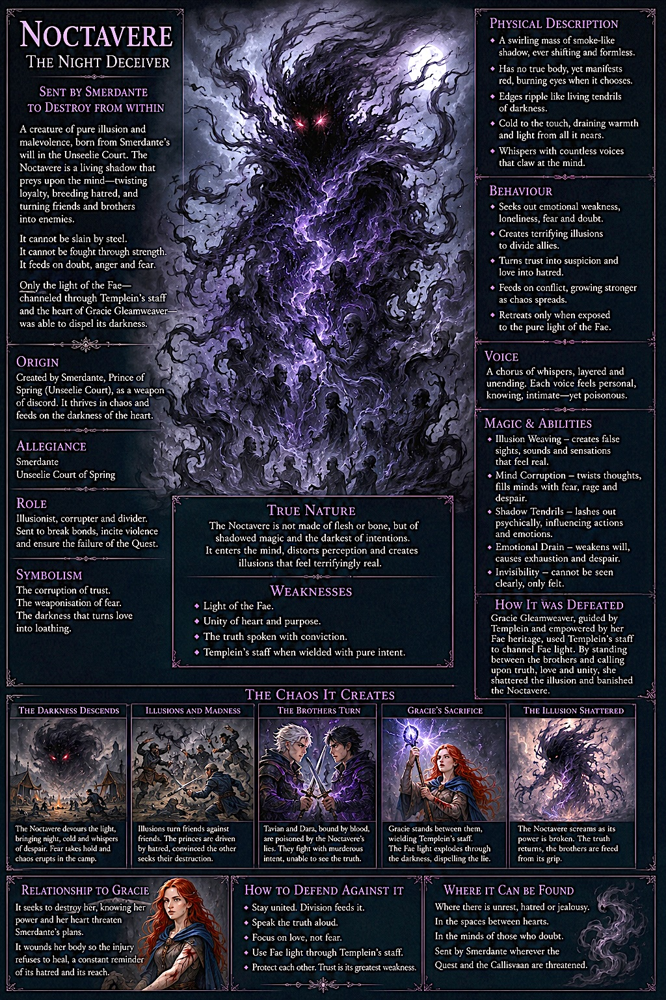
Noctavere
A smoke- like shadow that creates illusions.
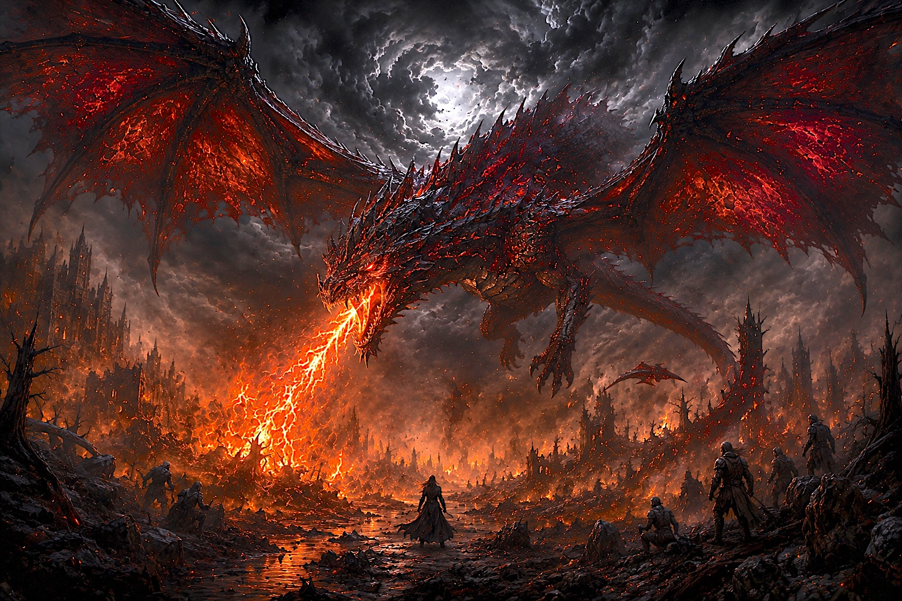
The Scourgearth
Death on wings. A vast, scaled, fire-breathing creature tied to Smerdante yet older than simple command. It hunts with purpose and sees Gracie as its target.
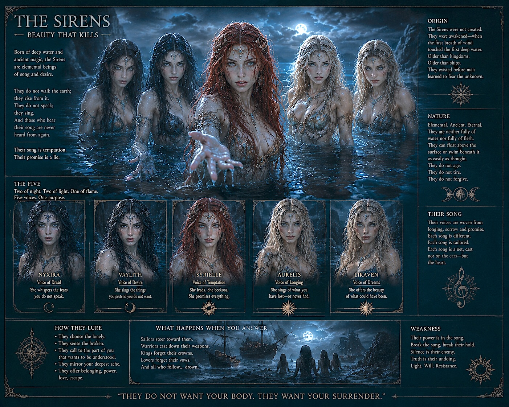
The Sirens
Five elemental figures of deadly song: two dark-haired, two blonde and one red-haired. They look human, but absolutely are not. Their beauty is a lure.

Skyrenders
Aerial Predators of Skjarthfell. Among the most feared aerial predators of the northern mountains, Skyrenders hunt in coordinated groups high above the frozen peaks of Skjarthfell. Watching from the clouds before striking with terrifying speed, they are feared not only for their intelligence but for the deadly parasites carried within their claws.
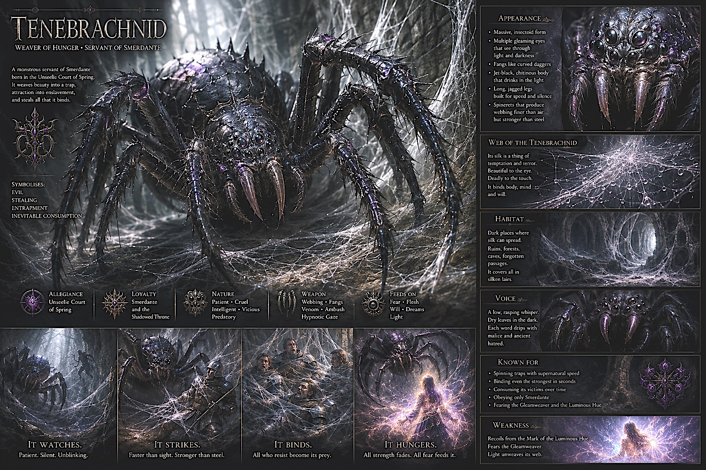
The Tenebrachnid
A massive spider servant of Smerdante, belonging to the Unseelie Court of Spring. It binds victims in living webbing and recognises the Gleamweaver.
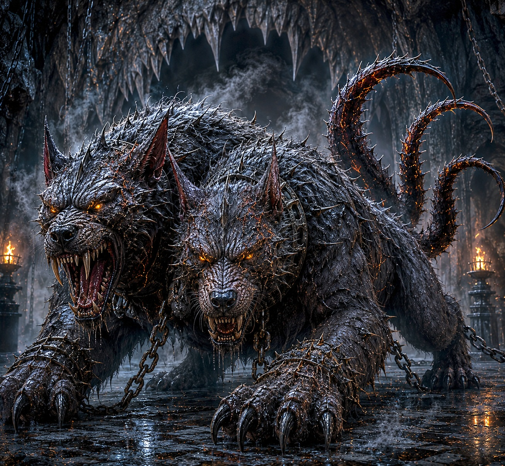
The Dreknhound.
Guardian to The Silent Lands.
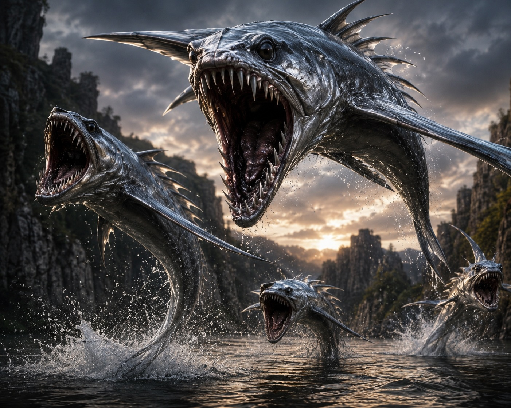
The Razorjaw
Part fish part monster. Silver. With jaws that kill, feeding on human flesh.

The Vraekhal
Ancient Presence of Skjarthfell. Older than memory and bound to the heights of Skjarthfell, the Vraekhal is neither beast nor spirit. It does not hunt flesh. Instead, it strips away pretence and deception, forcing all who enter its presence to confront the truths they most wish to hide.

Whitespine Hunters
Predators of the Northern Wilds. Feared across the northern wilds for their unnatural movements and terrifying coordination, Whitespine Hunters stalk in silence, hunt in patterns, and are drawn to movement above all else. Entire camps have vanished without a trace after crossing their territory.

The Sareth
A dangerous, intelligent blood-drinking shapeshifter that must taste another creature's blood before assuming its appearance. It can reproduce their voice and physical characteristics, but not their memories. Perfect for deception, infiltration and political intrigue.

The Morkel
A terrifying woodland predator, camouflaged against ancient trees, capable of detecting a living heartbeat through the roots and soil beneath its prey. It feeds on blood and can wait motionless for days before attacking.

Witches
Witches are inherently magical beings who possess the ability to create and cast spells. Their powers may be used for healing, protection, enchantment or more dangerous purposes, including curses and Dark Magic.
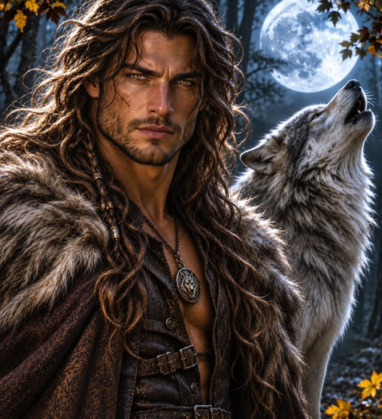
Werewolves
Werewolves are powerful creatures capable of transforming between their human-like and wolf forms at will. They are not dependent upon the full moon to transform, although their strength and supernatural abilities are at their most potent during this time.
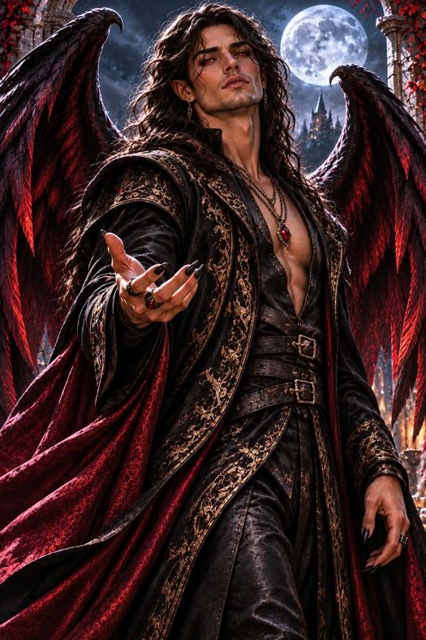
Demons
Demons are powerful supernatural beings, often associated with Dark Magic, manipulation and the control of others. Although some may be summoned through magical rituals, others live freely within Elyndra. A Fae may possess demonic ancestry or be half-demon, making their true nature particularly difficult to recognise.
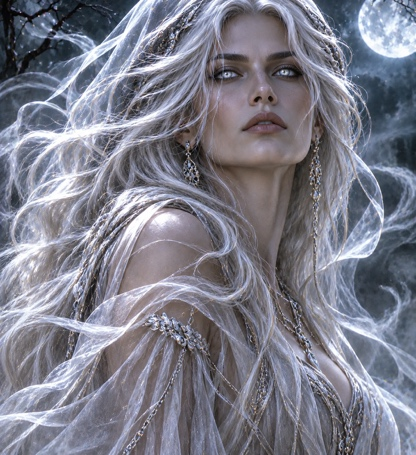
Wraiths
Wraiths are mysterious, predominantly female supernatural beings associated with death and the passing of souls from one existence to another. They are neither entirely good nor entirely evil, although their appearance is rarely welcomed.

Sirens and Succubi
Sirens and Succubi are among the most beautiful and dangerous female creatures found in Elyndra. Both possess extraordinary physical beauty, enchanting voices and the ability to attract and manipulate those who encounter them.